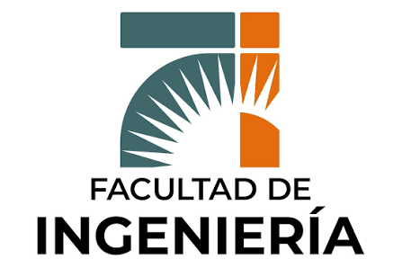

Facultad de Ingeniería
La Facultad de Ingeniería de la Universidad Nacional del Nordeste (UNNE) es una institución pública, gratuita y estatal cuya sede central se encuentra en el campus de la ciudad de Resistencia, Chaco. Fundada originalmente en 1957 como la Escuela de Ingeniería Civil, cuenta hoy con una sólida oferta académica y una estructura organizada para el acompañamiento estudiantil.

Ingeniería Civil:
La carrera de Ingeniería Civil se dicta en la Facultad de Ingeniería de la Universidad Nacional del Nordeste (UNNE), ubicada en el Campus Resistencia, Chaco. Es una carrera de grado presencial y permanente.
Detalles Clave de la Carrera:
- Duración: 5 años.
- Carga Horaria: 4.430 horas reloj totales + 200 horas de Práctica Profesional Supervisada (PPS).
- Título Otorgado: Ingeniero/a Civil.
- Estructura: Se divide en tres ciclos: Básico Común, Intermedio y Especialización. Un requisito clave es aprobar una evaluación de idioma inglés antes de ingresar al 4º año.
Orientaciones Disponibles:
Durante los últimos cuatrimestres (8º al 10º), la carrera permite optar por cuatro especializaciones funcionales:
- Proyecto de Estructuras en Obras Civiles
- Proyecto y Construcción de Obras Civiles
- Hidráulica
- Vías de Comunicación
Plan de estudios:
El plan de estudios de la carrera de Ingeniería Civil en la Universidad Nacional del Nordeste (UNNE) está estructurado para completarse en 5 años, sumando una carga horaria de 4.430 horas reloj más 200 horas de Práctica Profesional Supervisada
1. Ciclo Básico Común:
Abarca los primeros años de la carrera y se centra en brindar las herramientas conceptuales y analíticas indispensables para cualquier rama de la ingeniería. Incluye principalmente materias dictadas por el Departamento de Matemática:
- Álgebra y Geometría
- Análisis Matemático I, II y III
- Sistemas de Representación I y II
- Física y Química General
- Complementos de Matemáticas Especiales
Requisito obligatorio: Es necesario aprobar una Evaluación de Idioma Inglés Técnico antes de poder ingresar formalmente al 4.º año de la carrera.
2. Ciclo Intermedio:
En esta etapa de formación intermedia, se estudian las ciencias de la ingeniería y las tecnologías básicas orientadas específicamente a la construcción, las estructuras y el comportamiento de materiales, tales como:
- Estabilidad (Mecánica de Sólidos)
- Mecánica de Fluidos e Hidráulica
- Geotecnia y Mecánica de Suelos
- Tecnología de los Materiales de Construcción
3. Ciclo de Especialización (Materias Orientadas):
Durante los últimos cuatrimestres (8.º al 10.º nivel), cursás el núcleo de las tecnologías aplicadas. El plan ofrece 42 materias totales obligatorias junto con 5 asignaturas electivas según la especialidad técnica por la que optes:
- Proyecto de Estructuras en Obras Civiles: Centrado en el cálculo estructural avanzado y hormigón.
- Proyecto y Construcción de Obras Civiles: Enfocado en la gestión, dirección y ejecución de obras civiles.
- Hidráulica: Dirigido al aprovechamiento de recursos hídricos, saneamiento y obras hidráulicas.
- Vías de Comunicación: Especializado en el planeamiento de sistemas de transporte, diseño y construcción de rutas.
Para finalizar y obtener el título de Ingeniero/a Civil, debés acreditar tus 200 horas de Práctica Profesional Supervisada (PPS) en empresas o instituciones públicas del sector.